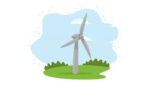

Énergie éolienne

Source : L''énergie éolienne provient du vent, c'est-à-dire du mouvement de l'air dans l'atmosphère.
Utilisation : Elle est transformée en électricité grâce aux éoliennes qui captent la force du vent avec leurs pales.
Cette électricité peut alimenter des habitations,
des entreprises ou être injectée dans le réseau électrique national.
On distingue les éoliennes terrestres et offshore (en mer),
cette dernière étant souvent plus efficace grâce à des vents plus réguliers